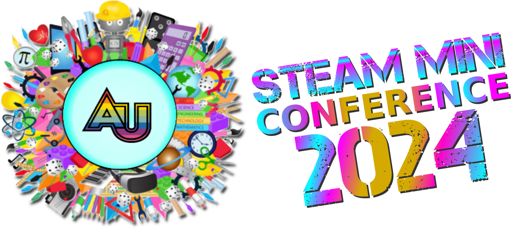

STEAM Mini Conference

Tuesday, May 14
4:30pm-9:00pm
The Second Annual MIXI STEAM Mini Conference is a graduate student conference that brings together our current students, faculty, alumni, colleagues from other institutions, invited high school students, and guests from the community. We will share and celebrate the work that we have done this semester. Students from Maker Lab 3 will present 45 minute workshops highlighting original STEAM projects and activities they created. Students from Multimodal Literacies will lead play-sessions to test out their STEM board games for learning which they designed and prototyped.
Details
- free and open to all
- registration required
- Location:
MIXI: Manhattan Institute for STEM & the Imagination
Adelphi NYC @ St. Francis College, 7th floor
Tentative schedule
- 4:30 - 5:00: Registration / Set-up
- 5:00 - 5:15 Dr. Hogan’s Welcome
- 5:15 - 6:00: Workshop Session 1
- 6:05 - 7:05: Science Board Game Play Sessions
- 7:15 - 8:00: Workshop Session 2
- 8:00 - 9:00: Reception
Game Play Sessions
6:05 - 7:05pm
Guess the Star!
[game template]Jessica Khaimova
Guess The Star is an astronomy-based card game. Two players will receive a deck of cards that contain stars from the Hertzsprung-Russell diagram. One player will draw a card and it's up to the other player to determine which star is on that card. They will have two minutes to ask questions about the star in order to figure it out. If they succeed, they will receive a token. The player with the most tokens wins!
BioD Quest
[game template]Krysalli Bloomfield
BioD Quest Is a community building and advocacy game, it is card driven and knowledge building board game. Players take on the role of conservationists traveling different ecosystems collecting different species and resource cards that they will use to conquer ecological challenges and advocate for ecological conservation. The player who successfully collects the most diverse range of species and/or has the highest level of conservation efforts has created the most sustainable ecosystem.
Petri: Battle of the colonies
[game template]Milo Roth
Petri: Battle of the Colonies is an area control fame where you play as different types of bacteria all trying to gain control of a petri dish and engulf the most nutrients.
Pathogen vs Immune System
[game template]Marco Suarez
"Pathogen vs Immune System" is an engaging, strategic card game where players assume the roles of pathogens or defenders of the immune system. By answering science-themed questions, players gain advantages to enhance their strategies, deploying power cards and activating special abilities to outmaneuver their opponents. With a blend of scientific knowledge and tactics players engage in great battles to dominate the human body and demonstrate their expertise in the realm of the immune system and infectious diseases.
Division Dash: Race to Reproduce!
[game template]Chuhyon Corwin
Players can compete to finish the stages of mitosis and meiosis accurately while racing against each other to see who completes the processes first. The game incorporates obstacles and bonuses to make it challenging and educational.
conquer the castle
[game template]Veronica Canoa Roman
Do you want to have some fun launching a catapult and competing with your friend who is the best warrior? If the answer is yes this is your game. Also, you will be able to learn a bit more about how a catapult works.
Migrations
[game template]Erika Lanfranchi
Migrations is a card-driven board game that allows players to learn about marine species migrations within the Atlantic Ocean. Players will discover species food chains through collecting diet cards needed to complete their random migration. This game is for ocean lovers who want to learn more about species interactions in a fun, competitive manner.
Protein Quest
[game template]Alicia Minervini
Protein Quest is an engaging and educational board game designed specifically for 8-9th grade students to explore the intricate world of protein synthesis and the factors affecting gene expression. Players embark on an exciting journey inside a human cell, navigating through organelles to build specific proteins that the body needs to function. The primary objective is to successfully transcribe and translate a gene into a functional protein. Players collect and use various molecular components like mRNA, tRNA, amino acids, and ATP energy to synthesize proteins.
Gene-Traits
[game template]Abiola Aderibigbe
Gene-Traits is a competitive, card-driven phenotype building board game. Students and lovers of Genetics use their genotype cards to create corresponding phenotype cards and acquire the most amount of points to win levels. Players will use their knowledge and chance to navigate the world of unknowns that can present genetic diseases, disorders or just life events that impact their phenotypes.
Radioactive Decay Board Game
[game template]Calvin Miller
In Radioactive Decay, players must decide between different decay types to create a path series beginning with Uranium-238 and ends with Lead-206. Students will roll dice to determine which decay mode they can use each turn and find the most efficient route to achieving radioactive decay.
Survival of The Fittest: Do you have what it takes to survive?
[game template]Anika K Bristol
Survival of the fittest is a card game centered around quick wits and random chance. You are playing as a creature trying to survive despite the ever changing environment it lives in. Choose adaptations you think will help you best survive and hope that you will live long enough to reproduce.
King of the Dump
[game template]Katy Field
King of the dump is an urban ecology board game based in New York City. The objective of the game is to prove your skills by winning multi-modal challenges given by some crafty creatures that one might find hanging around the city.
Circuit Circus
[game template]Mike Gerber
Circuit Circus is a fast-paced and competitive game for up to 4 players. Each player takes turns moving around the board while collecting wires, lightbulbs, and batteries. Different types of circuits are worth different amounts of points, and the player with the most points wins!
Joules
[game template]Emilia Hogg
An energy-themed twist on Parchisi, Joules is the perfect game for the ultimate competitor. Move your pieces around the board while collecting energy tokens, exchanging energy for traps to sabotage your opponents, and gathering cards to overcome traps-- be the first person to get all their pieces back to your home base and take the crown!
Survival of the Species
[game template]Ngowari Longjohn
Survival of the Species is a problem based game that forces players to either thrive in changing environments or die out as a result. Players must use their wits and cleverness to solve problems faced by organisms as a result of climate change and human impact on the environment, while dealing with the drastic changes in limited resources. The objective of the game is to adapt and survive in order to win. The first player to cross the finish line wins and becomes the top organism on the food web.
Pathogen vs Immune System
[game template]Marco Suarez
"Pathogen vs Immune System" is an engaging, strategic card game where players assume the roles of pathogens or defenders of the immune system. By answering science-themed questions, players gain advantages to enhance their strategies, deploying power cards and activating special abilities to outmaneuver their opponents. With a blend of scientific knowledge and tactics players engage in great battles to dominate the human body and demonstrate their expertise in the realm of the immune system and infectious diseases.
It's a Goldberg Game!
[game template]Gillian Hagen
"It's a Goldberg Game!" exposes players to the physics of energy and how it is transformed and conserved. Players must complete challenges with the materials they collect throughout the game in the spirit of Rube Goldberg machines. Creativity and physics team up for a win in "It's a Goldberg Game!"
Energy City
[game template]Angelo Tirado
Energy City is a turn based, card-driven, resource strategy board game. You are responsible for ensuring your city is supplied with the energy it needs to operate and convert your city into one that obtains its energy sustainability.
Digestive system board game!
[game template]Saul Tapia & Rob Shwartz
Looking for a game that would get you and your friends dropping off fun? Droppings! is the game for you. this board game will get you learning about the digestive system like no other class has done before. Choose your character and navigate the system to reach the goal. The objective of Droppings is to be the first player to be ejected, or "dropped," from the game. Players navigate their way through the digestive system, starting from the pylorus and ending at the rectum, encountering various diets, diseases, and microbes along the way.
Workshop Sessions
Session 1
5:15-6pm
Transforming with Scratch
Bianca & Merin
Scratch is a free, online educational tool that can be used to introduce students to computer programming. Scratch allows users to code digital stories, games, and animations. In this workshop, we will explore various geometric transformations and design algorithms while simultaneously highlighting how this digital resource can seamlessly be implemented in a classroom setting. Participants of this workshop will be given a video game project framework that incorporates various geometric transformations. They will play the game, interact with its code, and then have the opportunity to construct their own levels where they will integrate geometric transformations into their own games. This workshop is designed for participants of all levels.
Keywords: Math, CS, Geometry, Scratch, Geometric Transformations, Algorithms, Game Design
Room: TBD
Visualizing Homeostasis with Chibitronics
Katherine & Romulo
Homeostasis is a key concept in biology (and one that can be difficult to visualize). This workshop will provide a hands on way of visualizing this concept while also allowing students’ creativity to shine. Workshop participants will use Chibitronics to model positive and negative feedback in cells. Workshop participants will gain a basic understanding of Chibitronics and how they could be used to model reaction mechanisms in biological systems. They will use Chibitronics and paper circuits to design their own homeostasis model.
Keywords: Science, Biology, Homeostasis, Chibitronics, Positive and Negative Feedback, Paper Circuits
Room: TBD
Chaos Theory on a Canvas
Michele & Rena
Chaos Theory describes what is called a “sensitive dependence” on the initial conditions of a system. Meaning, the slightest change in variables within a chaotic system produces wildly unpredictable results with no discernible pattern compared to similar variables. It is paradoxically an unreplicable yet replicable system, since the same exact conditions within a system will always produce the same results. Through the use of double pendulums and watercolor paints, we will create unique works of art utilizing the concepts of Chaos Theory described above. Participants will choose the initial positions of double pendulums to paint on a canvas, then let them go, witnessing Chaos Theory in action, while guided through an in depth group lecture explaining the theory in concept, giving participants much needed context to their art pieces.
Keywords: Physics, Chaos Theory, Double Pendulums, Painting
Room: TBD
Session 2
7:15-8pm
Gesture Magic
Nicole & Brian
Participants will use breadboards, LEDs, and micro:bits to learn how to make programs react to user “gestures” with a handheld device. Reading sensor information from the micro:bit accelerometer, participants can code programs to react to different gestures and motions.
Keywords: CS, Accelerometers, micro:bit, gesture interfaces, MakeCode
Room: TBD
Musical Circuits
Jacob & Saul
We are teaching circuits! Participants will create cardboard instruments and connect them to micro:bits in order to create music. In this workshop, participants will be given the task of creating an appropriate connection for the circuit to work. Students will be using alligator clips and aluminum foil as well as glue guns. Students will have the choice of creating a keyboard, guitar, or drum kit. We will give a brief introduction to music theory so students can customize their own melodies.
Keywords: CS, Music, Circuits, micro:bit, MakeCode
Room: TBD
Chibitronic Graduation Cards: Where Circuits Shine and Knowledge Spreads
MaryRose
Chibitronics offer experience with interactive components such as LED stickers, sensors, and circuits which are designed to easily be integrated into various projects allowing users to create interactive and illuminated designs by simply connecting them with conductive materials such as copper tape. Chibitronics provides a hands-on creative approach to learning circuits for students, blending craftiness with technology to provide an accessible and engaging entry point. Through designing and assembling illuminated graduation cards, participants will develop a deeper understanding of circuity concepts in a fun and non-intimidating way.
Keywords: Electronics, Chibitronics, Graduation Cards, Paper Circuits, LED Stickers
Room: TBD
“Make” a heart rate monitor!
Jessica & Shannen
Jessican and Shannen will demonstrate their low-cost heart rate monitor built with micro:bit, 3D printed, parts, light sensors, and LEDs. Participants will learn to program the “monitor” to create biofeedback systems, and to study how their own pulse rate changes in response to different stimuli.
Keywords: Biology, Physics, micro:bit, Pulse Rate Sensor, Wearable Tech
Room: TBD